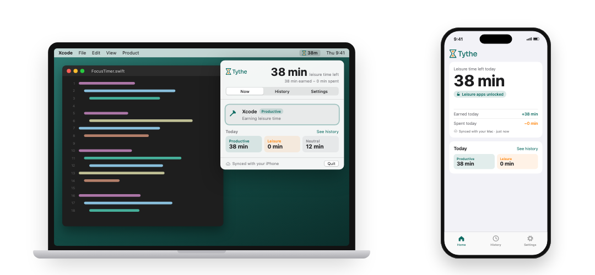
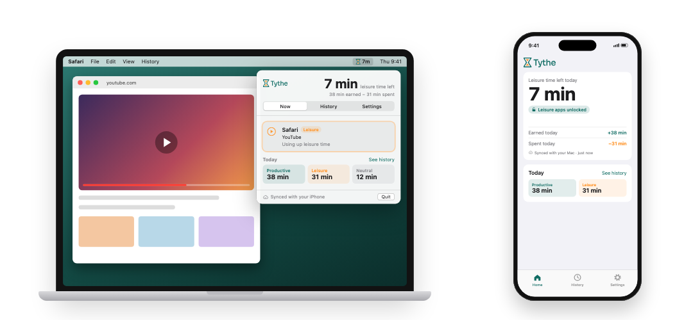
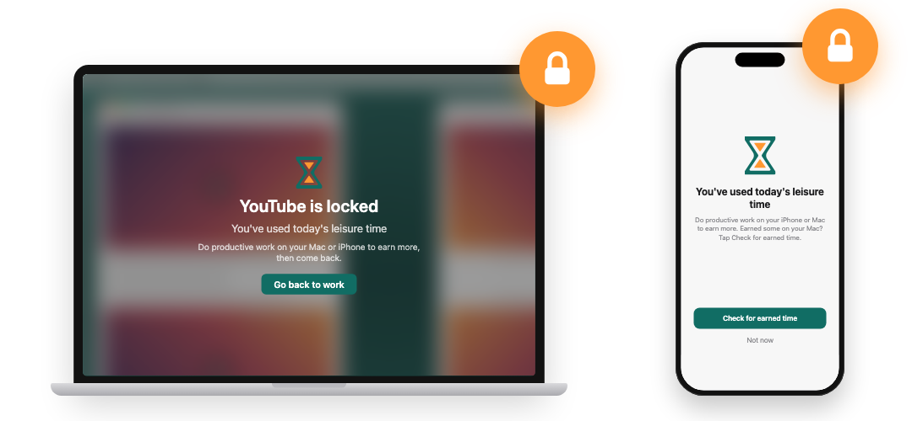

Free beta · Mac + iPhone
Earn your leisure time.
Tythe turns focused work into minutes for the apps you love. Productive apps earn time, leisure apps spend it, and when you run out they lock until you've done more work.
Works on an iPhone (iOS 17+), a Mac (macOS 14+), or both together.
Willpower alone doesn't work.
"Just a quick look" becomes an hour
Feeds, videos and games are built to keep you there. Screen time adds up before you notice.
Blockers get switched off
All-or-nothing app blockers feel like a punishment, so they rarely last more than a few days.
The important work slips
The to-do list stays the same while the scrolling doesn't. Tomorrow, again.
Tythe takes a different approach. You don't give up the apps you enjoy. You earn them.
How it works
Choose your productive and leisure apps
Pick the apps and websites you work in, and the ones that eat your time. Everything else is neutral and doesn't count either way. On your Mac, describe what you work on and Tythe judges websites for you.
Productive work earns minutes
Every minute in a productive app or website earns leisure time, on your Mac or your iPhone. You choose the rate, from 3 minutes of work for 1 minute of leisure up to 1 for 3. Exercise from Apple Health can earn time too.

Leisure apps spend them
Social, video and games use your balance up, minute for minute, on either device. Your Mac and iPhone share one balance, so time earned on one can be spent on the other.

Run out, and leisure apps lock
Until you do more productive work. On iPhone, Screen Time locks them. On Mac, a frosted lock screen covers them, even full-screen games. Earn more and they unlock on their own.

Built to be fair, not to punish.
One balance, two devices
Earn on your Mac, spend on your iPhone, or the other way round. Your balance stays in step through your own iCloud.
Smart website judging
Safari and Chrome pages are judged against what you work on, right on your Mac. Research for your project counts as work. The rabbit hole doesn't.
Exercise earns time too
Connect Apple Health and your Apple Watch exercise minutes, or heart-rate minutes from other trackers, earn leisure time.
A minute to save
Mid-game when time runs out? On Mac, "Give me 1 minute to save" holds the lock off so you can save first.
A fresh start every day
Your balance resets at a time you choose, carrying over up to 20 unused minutes, so one good day doesn't bank a lazy week.
Private by design
No accounts and no ads. What you do stays on your devices and in your own private iCloud. Privacy policy
Join the free beta
Tythe is in beta on Apple's TestFlight. It takes about two minutes to get set up.
Join the beta on TestFlight- Install TestFlight from the App Store on your iPhone or Mac. Get TestFlight
- Open the beta link on that device, using the button.
- Tap Accept, then Install. Open Tythe and follow the short setup. Using both? Do the same on your other device.
Questions
Do I need both a Mac and an iPhone?
No. Tythe works on an iPhone on its own, a Mac on its own, or both together. With both, they share one balance.
Is it free?
Yes, the beta is free to join through TestFlight.
Who decides what's productive?
You do. You choose your productive and leisure apps. On your Mac you can also describe your work, add websites, and correct any page Tythe gets wrong so it learns.
What happens when I run out of time?
Your leisure apps lock. On iPhone you'll see a Screen Time lock screen; on Mac a frosted lock screen covers the app. Do more productive work and they unlock automatically. Your productive apps always stay open.
Which browsers work on Mac?
Safari and Chrome.
What happens to my data?
Your activity stays on your devices and in your own private iCloud, which we can't see. Tythe can send a short anonymous daily summary to help improve the app, with no app or website names, times or health data. You can switch it off in Settings. Read the privacy policy.
What do I need?
An iPhone with iOS 17 or later, or a Mac with macOS 14 or later. Both devices need to be signed in to the same Apple Account with iCloud Drive on to share a balance.
Support
Questions, feedback or a problem? Email support@trytythe.com and I'll get back to you.
Testing through TestFlight? You can also send feedback straight from the TestFlight app, or take a screenshot while using Tythe.